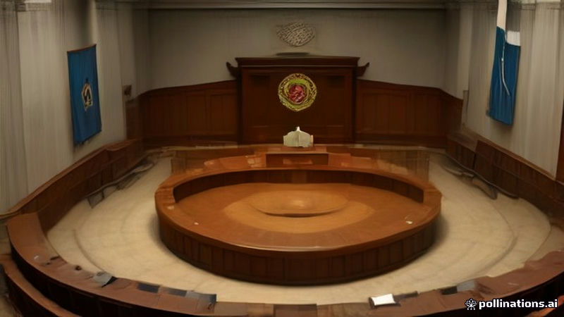

আইসিজে ঘোষণা করেছে মিয়ানমার নিরাপত্তা বাহিনী ২০১৭-এ রোহিঙ্গাদের বিরুদ্ধে গণহত্যা করেছে
NPR World, Al Jazeera English · 2026-11-19
AI-generated illustrationআন্তর্জাতিক ন্যায়বিচার আদালত রোহিঙ্গাদের বিরুদ্ধে মিয়ানমারের ২০১৭ সালের রাখাইন রাজ্যের সামরিক কার্যক্রমকে গণহত্যা হিসেবে স্বীকার করেছে।
আন্তর্জাতিক ন্যায়বিচার আদালত নির্ধারণ করেছে যে মিয়ানমার নিরাপত্তা বাহিনী ২০১৭ সালের রাখাইন রাজ্যের সামরিক অভিযান চলাকালে গণহত্যার উদ্দেশ্য নিয়ে কাজ করেছে, ফলে রোহিঙ্গা জনগণের বিরুদ্ধে গণহত্যা ঘটেছে।
এই রায়টি NPR World এবং Al Jazeera English রিপোর্ট করেছে, যা আদালতের এই সিদ্ধান্তকে তুলে ধরে যে ২০১৭ সালের অভিযান আইনগতভাবে গণহত্যা হিসেবে স্বীকৃত।
Written by AI from facts reported by the outlets named above. It may contain errors; check the original reporting.English version
ICJ Finds Myanmar Security Forces Committed Genocide Against Rohingya in 2017
The International Court of Justice has determined that Myanmar security forces acted with genocidal intent during the 2017 military operations in northern Rakhine State, concluding that the actions constitute genocide against the Rohingya population.
The ruling was reported by NPR World and Al Jazeera English, highlighting the court's finding that the 2017 campaign meets the legal definition of genocide.